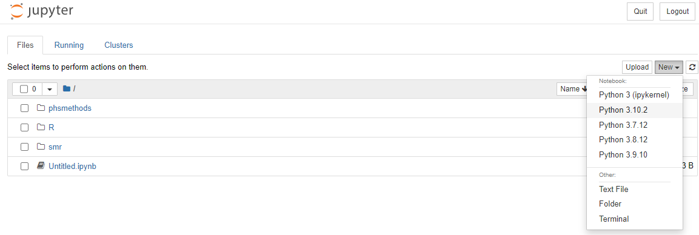

Introduction
Welcome to an introduction to python. This course is designed as a self-led introduction to R Markdown for anyone in Public Health Scotland.
Course Info
- This course is built to flow through sections and build on previous knowledge. If you’re comfortable with a particular section, you can skip it.
- Most sections have multiple parts to them. Navigate the course by using the buttons at the bottom of the screen to Continue or go to the Next Topic.
- The course will also show progress through sections, a green tick will appear on sections you’ve completed, and it will remember your place if you decide to close your browser and come back later.
What is Python?
Python is a powerful general purpose programming language with widespread use in many application domains. Python is open source and free to use, and available for all major operating systems.
Jupyter Notebook
There are several environments where you can run Python codes, such as “JupyterLab”, “Jupyter Notebook”. In this training course, we will use “Jupyter Notebook”.
Jupyter Notebook is designed for the easy integration of text and Python programming. It provides a more interactive workflow for Python programming, analysis and reporting. Some of its key features are:
- Code completion
- Syntax highlighting
- Code refactoring (find and replace)
- Integrated documentation viewer
- Ability to combine text, equations and images as well as code in a single document
- All outputs of the executed code are saved and embedded in the notebook
- Cell based execution and editing of code/text segments
Open a New Jupyter Notebook
We can access “Jupyter Notebook” on Posit Workbench. After signing in, click on New Session and a diaglog box will pop up. Click on Editor and select “Jupyter Notebook” from the drop down list, and then Start Session.

You will see the interface looks like this. There are three main tabs in Jupyter on start-up:
- Files Your file directory
- Running Lists all of the notebooks currently running
- Clusters For using IPython in parallel with your cluster (beyond the scope of this training guidance)

To open a new Jupyter Notebook, click the “New” drop down menu on the Files tab and select “Python 3.10.2” under the notebooks heading. This will open a blank Notebook with an IPython console running underneath it.


The IPython console is used to input and execute Python code interactively. Outputs, errors and warning messages are directly shown in the same window. A command that has been entered into the console is executed by
Pressing Shift + Enter to execute all the codes in the current active cell and advance the cursor to the next cell. Or press the “run cell, select below” button on the toolbar.
Pressing Ctrl + Enter to execute all the codes in the current active cell. If you want to move to the next cell below, just simply click on the “insert cell below” button on the toolbar.
Command and Edit Modes
Jupyter notebook is a modal editor which means that the keyboard does different things depending on which mode the Notebook is in. There are two modes: edit mode and command mode.
- Edit mode - it is indicated by a green cell border and left sidebar, and a prompt showing in the editor area:

When a cell is in edit mode, you can type things such as Python codes into the cell, like a normal text editor. Enter edit mode by pressing Enter or using the mouse to click on a cell’s editor area.
- Command mode - Once you click somewhere else outside the cell or press “esc” on keyboard, the cell turns into Command mode. Command mode is indicated by a grey cell border and a blue sidebar:

When you are in command mode, you are able to edit the notebook as a whole, but not type into individual cells. Most importantly, in command mode, the keyboard is mapped to a set of shortcuts that let you perform notebook and cell actions efficiently. For example, if you are in command mode and you press C and V, you will copy and paste the current cell.
A full list of useful shortcuts is available by going to “Help > Keyboard Shortcuts” (You can also access by pressing H in command mode).
Markdown Text Cells
Markdown text cells support plain text, Markdown and HTML. It will be useful to create headings, text instructions etc using markdown to organise the notebook like a written document. A cell can be changed from code mode to markdown mode by going to the top menu bar “Cell > Cell Type > Markdown”. Or select “Markdown” from the dropdown list:

Or press M while in Command Mode and highlighting the cell.
Here is an example of typing some text in a markdown cell. You can use hash key “#” to indicate the size of heading, followed by a space and the text.

Then press Shift + Enter to finish.

Python Library
Python library is a collection of functions and methods that allows you to perform lots of actions without writing your own code. For example, “pandas” is a Python library for data manipulation and analysis, which is used a lot in this training guidance.
Foundations
This section will walk you through the key data types and structures necessary to hit the ground running and start using Python productively.
Numbers
There are 3 main types of numbers that can be declared in Python.
age = 27 # Integers
height = 1.76 # Floating point numbers
k = 6.626e-32 # Using scientific notation
var1 = 2 + 5.2j # Complex numbersArithmetic Operators
The following are examples of all the arithmetic operators available in Python.
| Precedence | Operator | Description |
|---|---|---|
| 1 | + - |
Addition, Subtraction |
| 2 | * ** / |
Multiplication, Power, Division |
| 3 | // |
Floor Division (round down after division) |
| 4 | % |
Modulus (remainder after division) |
Strings
Strings in Python are an ordered sequence of characters, and can be declared with either single or double quotes.
name = 'John'
surname = 'Doe'Multiline strings can be declared with triple single and triple double quotes, but note that whitespace characters are recorded in the string e.g. for tabs and for newlines.
multiline = '''White space is
preserved
in multiline strings.'''
multilineThe print() function interprets these escape characters
as expected.
print(multiline)Different string quoting styles can be nested as only the outer one is used. You can also use a backslash to escape quote characters within the string if you need to display them.
nested_quotes = 'It\'s sometimes "necessary" to escape things'
nested_quotes
print(nested_quotes)For strings, the plus + sign will concatenate two
strings into one, and the asterisk * will repeat a string a
set number of times. Have a look and click ‘Run Code’ below to see the
output.
print('Hello' + ' ' + 'World')
print('Hello' + ' ' + 'World' * 4)
print('Hello' + (' ' + 'World') * 4)Data Types and Type Conversion
The type() function can be used to query the type of a
Python object, and any type conversion can be performed by using the
appropriate function e.g. int() for integer,
str() for string, and float() for a floating
point number.
myint = 12345
type(myint) # Check the data type of myint
mystr = str(myint) # Convert myint to a string
myfloat = float(myint) # Convert myint to a floating point number
mystr
myfloatImporting and Exporting Datasets
The Python language can be used for data analysis. The first step in performing analysis is to access your dataframe (i.e. your dataset). This section will introduce you how to import and export datasets.
Read and Save .csv Files
Various commonly used file formats can be read using Python, such as .csv and .xls files. You can import these files by using the “pandas” library. The general code is
dataset_name = pd.read_csv("filename.csv")There are three pieces to this code:
- to the right of the
=sign is the pandas import code:pd.read_csv("filename.csv") - to the left of the
=sign is the name we’ve given to the dataset:dataset_name - the
=sign tells Python to connect the namedataset_nameto the imported dataset
This is an example of a more general concept in Python called
variable assignment. A variable in
Python is a name for referring to an object, just like
dataset_name refers to the imported dataset. The object in
question is called the value of the variable.
To assign a value to a variable, we use the = sign as
above:
variable = valueAlso remember that Python is a case-sensitive language.
Here is a real example for importing a dataset “borders_inc_age.csv”. Have a look and click ‘Run Code’ below to see the output.
# Import pandas library
import pandas as pd
# Read in the dataset
borders = pd.read_csv("data/borders_inc_age.csv")
# Check the first few rows of the dataset. Default is 5 rows.
borders.head() If you make any changes to borders and would like to save it as a new .csv file, use the following command:
borders.to_csv("file path and name")Read Specific Columns
It is possible to omit certain columns from a dataframe when importing a file by using usecols command:
# Read in the dataset with specific columns
borders2 = pd.read_csv("data/borders_inc_age.csv", usecols = ['URI', 'HospitalCode', 'Specialty'])
# Check the first few rows of the dataset. Default is 5 rows.
borders2.head() It is also possible to rearrange the columns within an imported dataframe. The columns in the example above can be rearranged using the following code:
# Rearrange the columns
borders3 = borders2[['URI', 'Specialty', 'HospitalCode']]
# Check the first few rows of the dataset. Default is 5 rows.
borders3.head()Once the dataframe has been read in, you can delete a specific column (or columns) that you do not need using del command:
# Delete URI column
del borders2["URI"]
# Check the first few rows of the dataset. Default is 5 rows.
borders2.head()Knowledge Check
Code Exercise
# Hello World example
hello_world <- "Hello World"
print(hello_world)Help & Feedback
Feedback
[Insert iframe for Google/Microsoft Forms]